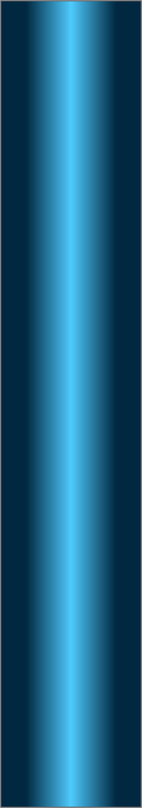
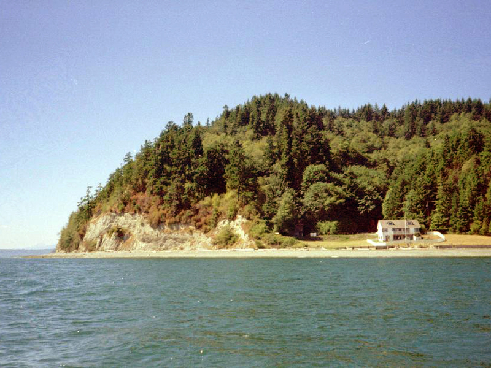
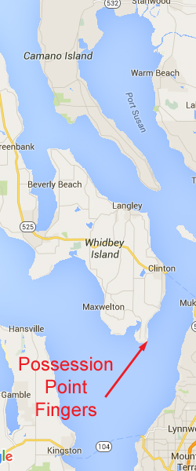
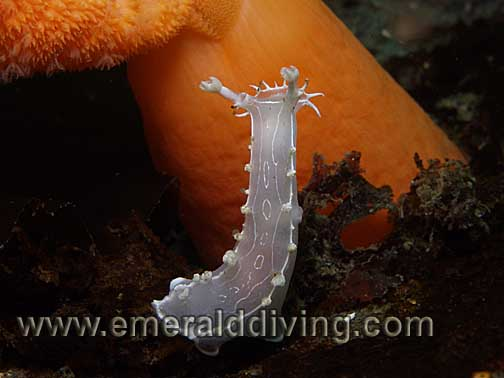
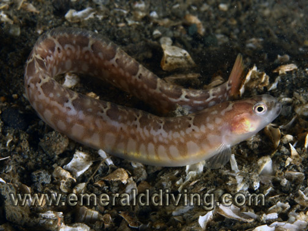

Double click to edit

Possession Point Fingers
Topography: Wall dive on expansive sandstone, clay, and rock “finger” formations that stand vertically.
Puget Sound marine life rating: 4
Puget Sound structure rating: 5
Diving depth: 70-110 feet.
Highlight: Unique geological structure. At least right species of rockfish and unusual invertebrates inhabit this site.
Skill rating: Advanced
GPS Coordinates: N47° 54.349’ W122° 22.612’
Access by boat: This site is positioned on the southeast corner of Whidbey Island. Mukilteo is to the northeast and Edmonds to the southeast. The fingers lie directly out from the first large dirt bluff just past the last house on the beach. The fingers are expansive and easily noted on a depth sounder as the bottom jumps quickly from well over 100 feet to 20-30 feet when approaching the shoreline. I anchor along the northern section of the dirt bluff in about 25 feet of water.
Shore access: None. The adjacent beach is private property.
Dive profile: The surface current and color of the water at this site can be quite intimidating. Several major rivers are north of this site. Run-off from the nearby rivers adversely affects the underwater visibility and generates a surface current, but these ill-effects are generally limited to the top 10 or 20 feet of water.
The fingers run predominately in a north-south direction. The northern section parallels the adjacent shoreline. The fingers then break to the southeast as the shoreline breaks to the southwest.
The shelf above the northern section of the fingers is sandy and slopes away at a moderate pace down to about 35 feet. It juts out in areas and forms small vertical valleys and fingers. I descend in one of the valleys between two protruding fingers. I follow the valley down to my desired depth (usually about 90 feet), then transverse the meandering fingers and valleys in a southerly direction. I run a down-and-back pattern with the down leg at about 75-100 feet, and back leg at 50-70 feet. My time on the vertical fingers is usually limited by my no-deco schedule.
The top of the fingers are deeper to the south. The finger tops are about 35 feet deep where I anchor, but at my turning point the fingers tops are at 60 or even 70 feet. I plan carefully so I don’t end up low on air or no- deco time while exploring the southern region of the fingers.
The fingers are pocked full of holes, chasms, ledges, shelves, and caves. Some of the caves are big enough to swim into, although I wouldn’t recommend it. Small shelves sporadically protrude from the wall and collect rocks and boulders that have fallen from above.
The fingers cascade down to very deep depths. Sometimes I think I have reached bottom only to find I was deceived by an extensive shelf followed by another verticality. The structure continues down well below the safe limits of recreational diving in many places.
I end my dive on the shelf above the northern section of the fingers. I leisurely work upslope and enjoy my safety stop time investigating some of the creatures that make the sandy shelf and accompanying rocks their home. I deliberately end my dive a little north of the boat so I can use the surface current to drift back to the boat.
My preferred gas mix: EAN 32
Current observations:
Current Station: Admiralty Inlet
Slack Corrections: None
I was originally led to believe that this site was extremely current intensive, but my experience has taught me otherwise.
A significant amount of surface current almost always plagues this site. This surface current is generated by fresh water run-off from rivers to the north and always heads southwest around Possession Point, regardless of the tide. The only exception is when a south wind is blowing strong enough to drive the surface current to the north. I have not encountered a heavy or even moderate current below the fresh water layer even off-slack on major exchanges.
Boat Launch:
· Mukilteo State Park boat ramp. Approximately 5 miles from the dive site. Note that the docks are pulled from this facility during
the off-season.
Facilities: None
Hazards:
· Depth: These vertical fingers plunge to depths beyond safe recreational diving limits. Good buoyancy and depth management
skills are required.
· Fishing boats: Salmon fishermen often troll in this general area. Bottom fishermen occasionally jig along the wall.
· Surface current and visibility: Strong surface current and poor visibility typically plague the top of the water column.
· Exposure. This site does not offer much protection from the wind, especially from the south. Surface conditions can deteriorate
very quickly.
Marine life: This is my favorite boat dive in the Puget Sound area due to the extensive variety of marine life I often find here. This is the only place in Puget Sound where I regularly see eight species of rockfish on a single dive - copper, quillback, brown, yellowtail, black, vermillion, Puget Sound, and juvenile yelloweye. Red Irish lords, buffalo sculpins, longfin sculpins, lingcod, and cabezon all haunt the fantastic structure in this area. I often find grunt sculpins perched on ledges.
The fingers are mainly composed of clay and sandstone. Many of the larger and more prolific invertebrates cannot establish a foothold on these soft compounds. Smaller invertebrates have no problem adapting to these soft walls. I have seen more red nudibranchs at this site than any other in Washington. I typically find these ornate creatures patrolling the underside of overhangs during summer months. Sure bets are orange spotted nubibranchs, white lined dironas, and sea lemons. Zoanthids. mushroom ascidians, and yellow boring sponges have established dense colonies along sections of the wall. Squat lobsters can be found occupying some the smaller cracks in the wall. I even found a juvenile Puget Sound king crab clinging to this wall on one dive.
I only occasionally find wolfeels and octopus here. Many of the potential lairs are very deep, allowing these animals to completely hide from a diver’s probing light.
Sections of the sandy shelf above the fingers provide excellent habitat for orange seapens. I often observe striped and pink nudibranchs hunting seapens. Dungeness crabs, rock crabs, various anemones, perch, and rock sole are common residents of the sandy shelf.
Puget Sound marine life rating: 4
Puget Sound structure rating: 5
Diving depth: 70-110 feet.
Highlight: Unique geological structure. At least right species of rockfish and unusual invertebrates inhabit this site.
Skill rating: Advanced
GPS Coordinates: N47° 54.349’ W122° 22.612’
Access by boat: This site is positioned on the southeast corner of Whidbey Island. Mukilteo is to the northeast and Edmonds to the southeast. The fingers lie directly out from the first large dirt bluff just past the last house on the beach. The fingers are expansive and easily noted on a depth sounder as the bottom jumps quickly from well over 100 feet to 20-30 feet when approaching the shoreline. I anchor along the northern section of the dirt bluff in about 25 feet of water.
Shore access: None. The adjacent beach is private property.
Dive profile: The surface current and color of the water at this site can be quite intimidating. Several major rivers are north of this site. Run-off from the nearby rivers adversely affects the underwater visibility and generates a surface current, but these ill-effects are generally limited to the top 10 or 20 feet of water.
The fingers run predominately in a north-south direction. The northern section parallels the adjacent shoreline. The fingers then break to the southeast as the shoreline breaks to the southwest.
The shelf above the northern section of the fingers is sandy and slopes away at a moderate pace down to about 35 feet. It juts out in areas and forms small vertical valleys and fingers. I descend in one of the valleys between two protruding fingers. I follow the valley down to my desired depth (usually about 90 feet), then transverse the meandering fingers and valleys in a southerly direction. I run a down-and-back pattern with the down leg at about 75-100 feet, and back leg at 50-70 feet. My time on the vertical fingers is usually limited by my no-deco schedule.
The top of the fingers are deeper to the south. The finger tops are about 35 feet deep where I anchor, but at my turning point the fingers tops are at 60 or even 70 feet. I plan carefully so I don’t end up low on air or no- deco time while exploring the southern region of the fingers.
The fingers are pocked full of holes, chasms, ledges, shelves, and caves. Some of the caves are big enough to swim into, although I wouldn’t recommend it. Small shelves sporadically protrude from the wall and collect rocks and boulders that have fallen from above.
The fingers cascade down to very deep depths. Sometimes I think I have reached bottom only to find I was deceived by an extensive shelf followed by another verticality. The structure continues down well below the safe limits of recreational diving in many places.
I end my dive on the shelf above the northern section of the fingers. I leisurely work upslope and enjoy my safety stop time investigating some of the creatures that make the sandy shelf and accompanying rocks their home. I deliberately end my dive a little north of the boat so I can use the surface current to drift back to the boat.
My preferred gas mix: EAN 32
Current observations:
Current Station: Admiralty Inlet
Slack Corrections: None
I was originally led to believe that this site was extremely current intensive, but my experience has taught me otherwise.
A significant amount of surface current almost always plagues this site. This surface current is generated by fresh water run-off from rivers to the north and always heads southwest around Possession Point, regardless of the tide. The only exception is when a south wind is blowing strong enough to drive the surface current to the north. I have not encountered a heavy or even moderate current below the fresh water layer even off-slack on major exchanges.
Boat Launch:
· Mukilteo State Park boat ramp. Approximately 5 miles from the dive site. Note that the docks are pulled from this facility during
the off-season.
Facilities: None
Hazards:
· Depth: These vertical fingers plunge to depths beyond safe recreational diving limits. Good buoyancy and depth management
skills are required.
· Fishing boats: Salmon fishermen often troll in this general area. Bottom fishermen occasionally jig along the wall.
· Surface current and visibility: Strong surface current and poor visibility typically plague the top of the water column.
· Exposure. This site does not offer much protection from the wind, especially from the south. Surface conditions can deteriorate
very quickly.
Marine life: This is my favorite boat dive in the Puget Sound area due to the extensive variety of marine life I often find here. This is the only place in Puget Sound where I regularly see eight species of rockfish on a single dive - copper, quillback, brown, yellowtail, black, vermillion, Puget Sound, and juvenile yelloweye. Red Irish lords, buffalo sculpins, longfin sculpins, lingcod, and cabezon all haunt the fantastic structure in this area. I often find grunt sculpins perched on ledges.
The fingers are mainly composed of clay and sandstone. Many of the larger and more prolific invertebrates cannot establish a foothold on these soft compounds. Smaller invertebrates have no problem adapting to these soft walls. I have seen more red nudibranchs at this site than any other in Washington. I typically find these ornate creatures patrolling the underside of overhangs during summer months. Sure bets are orange spotted nubibranchs, white lined dironas, and sea lemons. Zoanthids. mushroom ascidians, and yellow boring sponges have established dense colonies along sections of the wall. Squat lobsters can be found occupying some the smaller cracks in the wall. I even found a juvenile Puget Sound king crab clinging to this wall on one dive.
I only occasionally find wolfeels and octopus here. Many of the potential lairs are very deep, allowing these animals to completely hide from a diver’s probing light.
Sections of the sandy shelf above the fingers provide excellent habitat for orange seapens. I often observe striped and pink nudibranchs hunting seapens. Dungeness crabs, rock crabs, various anemones, perch, and rock sole are common residents of the sandy shelf.





Vermilion Rockfish
Diamondback Nudibranch
Zoanthids
Quillback Rockfish
Underwater imagery from this site


Urticina Anemone
Longfin Gunnel

Blackeye Goby
Mosshead Warbonnet